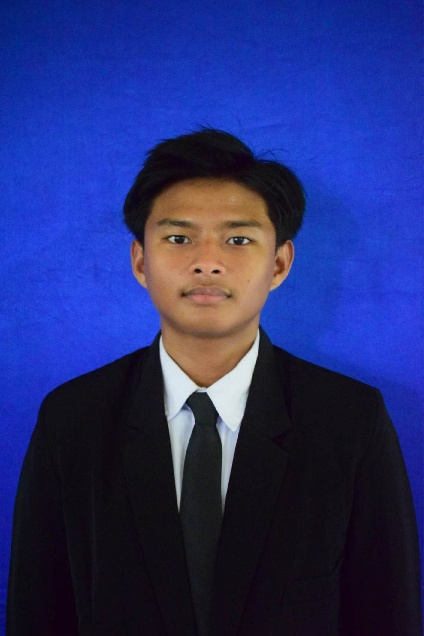

Pendidikan
- 2014-2020: SDN 2 BATUAH KOTABARU
- 2020-2023: SMP IT AL IZZAH KOTABARU
- 2023-2025: MAN KOTABARU
- 2025-Sekarang: Universitas Islam Kalimantan

Nama: Raafi Ghozaly Irawan
Tempat/Tanggal Lahir: Biak, 28 Desember 2006
Email: raafirawan@gmail.com
Alamat: JL.RAYA STAGEN KM.7 PERUM CITRA PERMATA BELANGKAS BLOK.B
Saya adalah mahasiswa semester 3 di Universitas Islam Kalimantan (UNISKA) yang memiliki minat besar di bidang komputer. Saya berkomitmen untuk belajar dan mengembangkan kemampuan melalui program studi Teknik Informatika.
Saya milih UNISKA karena program studi TI yang banyak program kerjanya luas dan beragam, sehingga saya dapat memilih bidang yang sesuai dengan minat dan tujuan karir saya. Dengan program kerja yang luas, saya percaya bahwa UNISKA dapat membantu saya mempersiapkan diri untuk menjadi profesional yang kompeten dan berintegritas.